Aperçu
La plateforme de pointage développée par Kaeyros Analytics s'adresse à deux types de structures, chacune disposant d'un accès adapté à ses besoins :
Gestion propre
Destinée aux entreprises qui utilisent la solution pour gérer leur propre personnel. Permet de suivre en temps réel les présences, absences et retards, de configurer les sites, horaires et programmes, et de générer des rapports détaillés.
Compte Reseller
Destinée aux structures souhaitant proposer la solution à d'autres entreprises clientes. Réservée aux comptes Reseller, avec un accès étendu permettant de créer et gérer plusieurs espaces entreprises depuis une seule interface.
Ce guide décrit étape par étape l'utilisation de la plateforme, depuis la connexion jusqu'au reporting.
Connexion à la plateforme
L'accès à la plateforme d'administration se fait via un navigateur web :
Pour vous connecter, suivez les étapes ci-dessous :
Ouvrez votre navigateur web (Google Chrome, Firefox, Edge, etc.) ;
Saisissez ou cliquez sur l'URL ci-dessus ;
Renseignez votre adresse e-mail et votre mot de passe, tels que fournis lors de votre souscription ;
Cliquez sur le bouton « Connexion » pour accéder à votre espace.
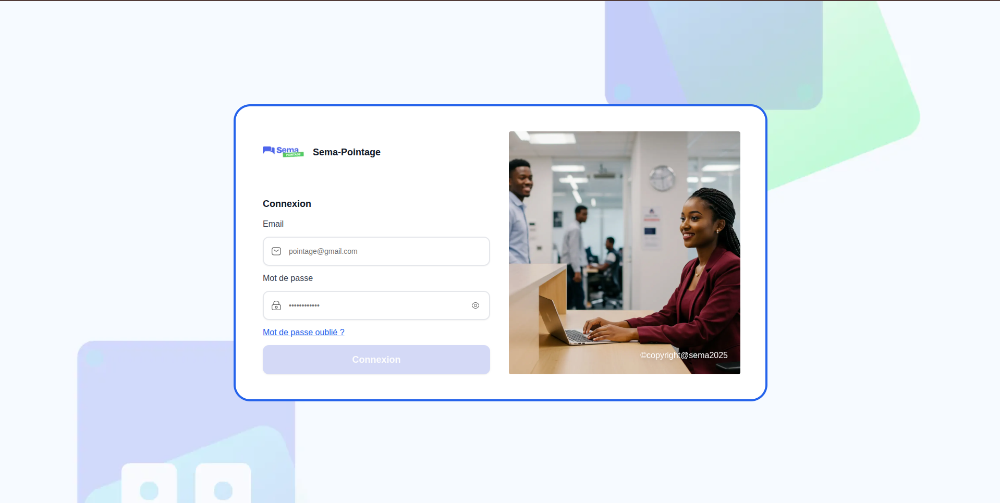
Si vous ne vous souvenez plus de votre mot de passe, veuillez contacter votre administrateur ou l'équipe Kaeyros Analytics afin d'en obtenir un nouveau.
Une fois connecté, vous êtes automatiquement redirigé vers les journaux de présence.
Journaux de présence
Les journaux de présence constituent le point central du suivi quotidien. Cette page affiche en temps réel l'ensemble des pointages effectués par les employés, avec pour chaque entrée la date, le nom de l'employé, le site, le département, l'heure d'entrée, l'heure de sortie, le retard éventuel, le total des heures travaillées et le statut.
Depuis cette page, vous pouvez :
- visualiser les présences pour une journée donnée,
- saisir manuellement une présence,
- télécharger le rapport de présence,
- consulter le reporting global,
- consulter le détail des présences d'un employé.
Cette fonctionnalité permet de consulter rapidement la liste des employés et leur statut de présence pour une journée donnée. Vous pouvez affiner l'affichage grâce aux filtres disponibles : période, site, département, employé, type de saisie et statut. Un champ de recherche permet de retrouver rapidement un employé par son nom.
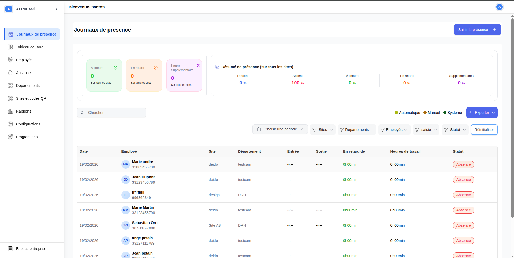
Cette fonctionnalité permet d'enregistrer directement la présence d'un employé pour une journée donnée, en spécifiant son heure d'arrivée ou de départ. Utile en cas d'oubli de pointage, de correction ou d'ajout exceptionnel.
- Cliquez sur le bouton « Saisir la présence » situé en haut à droite de la page.
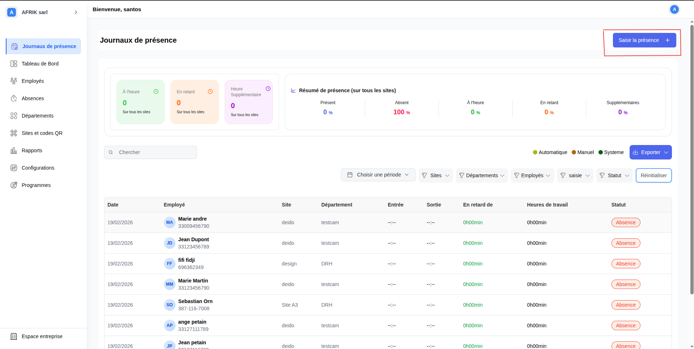
- Une boîte de dialogue s'ouvre. Sélectionnez l'employé concerné, choisissez le site, puis renseignez la date et l'heure de pointage.

- Cliquez sur « Valider ». La présence sera immédiatement visible dans le tableau avec la mention Manuel.
Chaque employé doit enregistrer deux pointages par jour : l'heure d'arrivée lors de l'entrée sur le site, et l'heure de départ à la sortie.
Cette option permet d'exporter les données de présence sous forme de fichier pour la période sélectionnée.
- Sélectionnez la période souhaitée ;
- Cliquez sur le bouton « Exporter » en haut à droite du tableau.
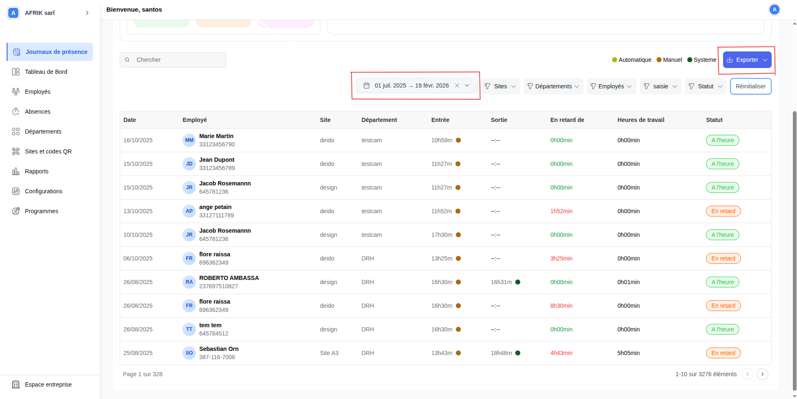
Structure du fichier exporté :
| Colonne | Description |
|---|---|
| Employé | Nom complet de l'employé |
| Entrée / Sortie | Heures de pointage correspondantes |
| Site | Lieu du pointage |
| Département | Département auquel est rattaché l'employé |
| En retard de | Durée éventuelle du retard |
| Heures de travail | Total des heures effectuées sur la journée |
| Type de saisie | Automatique, manuel ou système |
| Statut | Présent, Absent ou En retard |
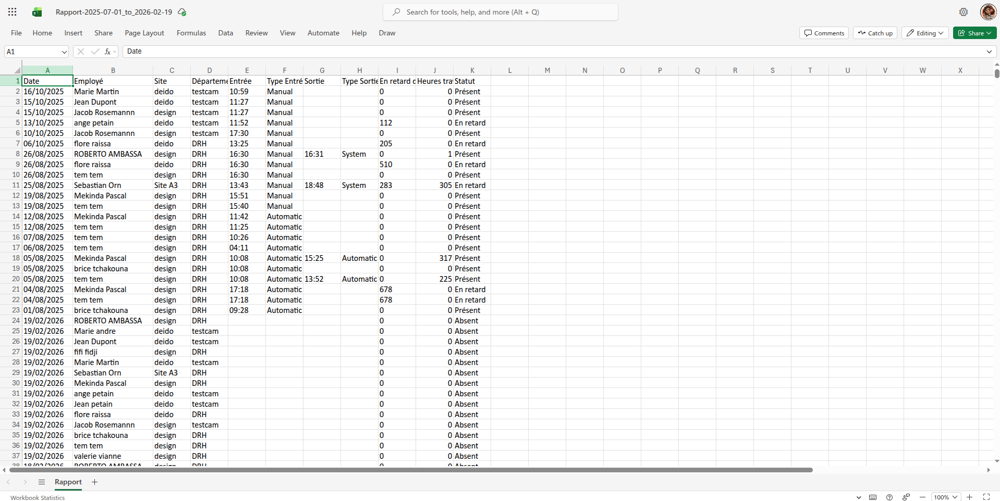
Au-dessus du tableau figurent un champ de recherche, des filtres par période, site, département, employé, type de saisie et statut, ainsi qu'un bouton « Réinitialiser ». Une légende indique le mode de saisie de chaque pointage : Automatique (vert clair), Manuel (orange) et Système (vert foncé).
La page se compose de deux parties. En haut, un résumé global affiche trois indicateurs sous forme de cartes colorées : À l'heure (vert), En retard (orange) et Heure supplémentaire (violet). À droite, un résumé de présence global affiche les pourcentages répartis en cinq catégories : Présent, Absent, À l'heure, En retard et Supplémentaires.
En bas, le tableau liste le détail des pointages de chaque employé : date, nom, site, département, entrée/sortie, retard, heures travaillées et statut. Des filtres et un champ de recherche permettent d'affiner l'affichage.
Cliquez sur le nom d'un employé dans le tableau pour accéder à sa fiche individuelle. La fiche affiche en en-tête ses informations personnelles et se compose de deux onglets :
Onglet Rapports/analyses — présente une synthèse complète sur la période sélectionnée : nombre de pointages par mode de saisie, six métriques récapitulatives (jours présents, arrivées à l'heure, retards, absences, % de présence, retard moyen) et trois graphiques d'analyse (camembert, histogramme, calendrier mensuel coloré).
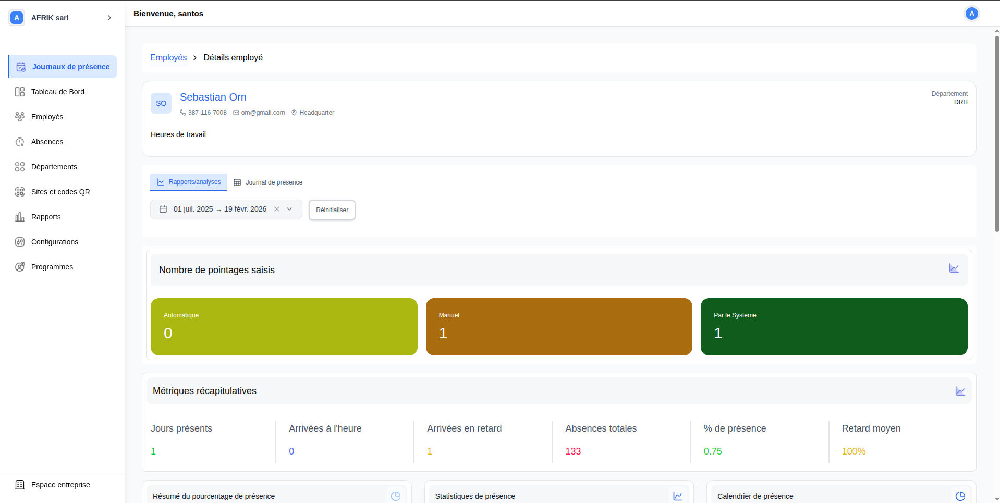
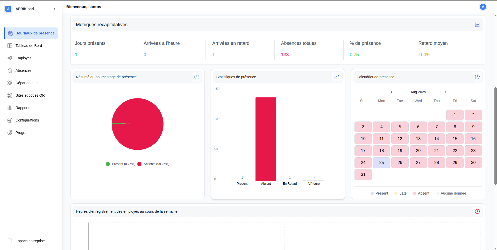
Onglet Journal de présence — liste de façon chronologique les pointages de l'employé : date, heure d'entrée, heure de sortie, durée du retard, heures travaillées et statut. Un bouton « Exporter » permet de télécharger les données.

Tableau de Bord
Le tableau de bord offre une vue d'ensemble synthétique et en temps réel de la situation de présence de l'ensemble de l'entreprise. Il se compose de deux sections principales.
Des filtres permettent d'affiner l'affichage par période, site, département et employé. Quatre cartes colorées présentent les chiffres essentiels :
- Total des employés (bleu) : nombre total d'employés enregistrés, avec un lien vers la liste complète ;
- Absences (rose) : nombre total d'absences enregistrées en nombre de jours ;
- Retards (jaune) : nombre total de retards en minutes cumulées ;
- Heures supplémentaires (violet) : volume total des heures supplémentaires en minutes.

Un tableau détaillé présente la situation individuelle de chaque employé sur la période. Des filtres permettent d'affiner par période, site, département, employé et statut. Un bouton « Voir tout » donne accès à la vue complète des journaux. Pour chaque employé sont affichés : jours travaillés / jours attendus, heures travaillées / heures attendues, jours d'absence, nombre de retards, minutes de retard cumulées, notes (score de présence) et heures supplémentaires. Un bouton « Exporter » permet de télécharger les données.
Employés
L'onglet Employés centralise la gestion de l'ensemble du personnel. Il affiche la liste complète des employés avec leur identifiant, nom, département, site assigné, programme de travail, informations de contact et statut (Actif ou Inactif). Deux modes d'affichage sont disponibles : Vue en tableau et Vue en carte.

Cliquez sur « Ajouter un employé ». Deux modes d'ajout sont disponibles :
Ajout singulier
Renseignez manuellement les informations : nom, prénom, e-mail, téléphone, département, poste, sites assignés et photo de profil (optionnelle).
Ajout en masse
Importez plusieurs employés via un fichier Excel ou CSV (.xlsx, .xls, .csv — max 10 Mo) en sélectionnant le site, département et poste communs.
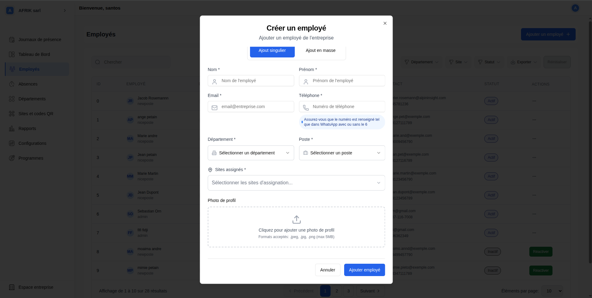
Renseignez le numéro tel qu'il est enregistré sur WhatsApp (ex. : 23789898989 ou 237689898989). Un numéro incorrect empêchera l'employé de pointer via WhatsApp.
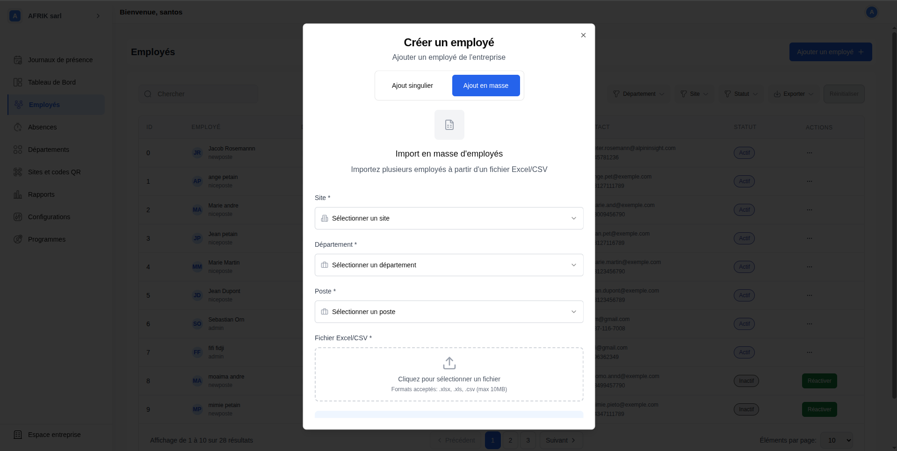
Depuis le tableau, cliquez sur les trois points à l'extrême droite d'un employé pour modifier ses informations ou supprimer son profil. Les employés inactifs disposent d'un bouton « Réactiver ».
Absences
L'onglet Absences centralise le suivi de toutes les indisponibilités des employés. Il affiche la liste complète des absences enregistrées avec identifiant, nom de l'employé, département, site, durée et statut.

Cliquez sur « + Ajouter une absence ». Renseignez les champs suivants :
- Employé : sélectionnez l'employé concerné ;
- Statut : Approuvée ou Non approuvée ;
- Type d'absence : congé maladie, congé de maternité, deuil, etc. ;
- Durée : date de début et date de fin ;
- Raison : description ou justification (optionnel) ;
- Pièce jointe : document justificatif (PNG, JPEG ou PDF — max 5 Mo).
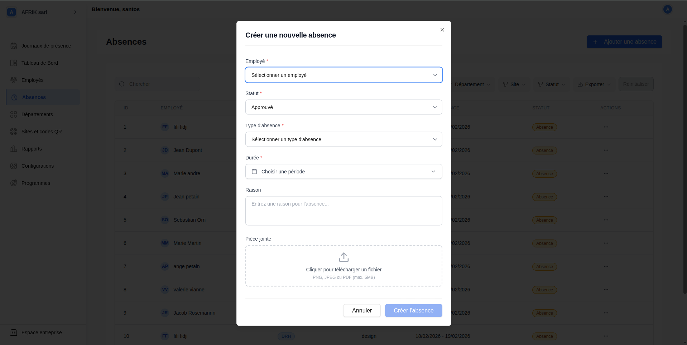
Chaque absence peut avoir l'un des trois statuts suivants :
- Absence : statut attribué automatiquement lorsque le système détecte l'absence de pointage ;
- Absence approuvée : le responsable a officiellement validé l'absence ;
- Absence non approuvée : le responsable a examiné l'absence mais ne l'a pas validée.
Pour modifier le statut, cliquez sur les trois points à droite de la ligne, puis choisissez Modifier. Vous pouvez aussi cliquer directement sur le statut dans le tableau.

Les absences non saisies sont détectées automatiquement par le système lorsqu'un employé n'effectue aucun pointage lors d'un jour de travail prévu, et reçoivent le statut Absence par défaut.
Départements
L'onglet Départements permet de gérer l'ensemble des départements de l'entreprise. Il affiche la liste avec pour chacun son numéro et son nom.

Cliquez sur « + Ajouter un département », saisissez le nom du département, puis cliquez sur « Ajouter département ». Il est immédiatement disponible pour l'affectation des employés.
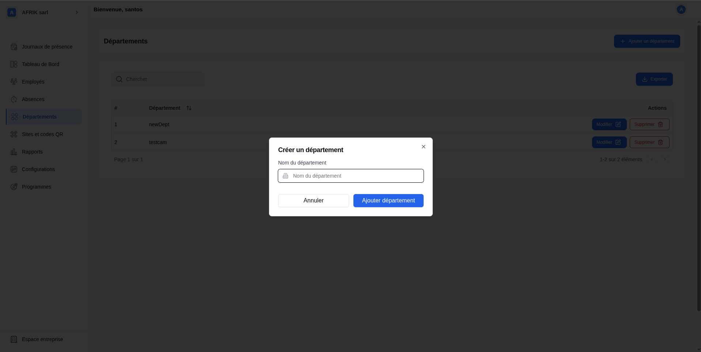
Cliquez sur « Modifier » à droite du département concerné. Apportez les modifications puis validez.
Cliquez sur « Supprimer » à droite du département concerné. Une confirmation peut être demandée avant la suppression définitive.
Les départements permettent de filtrer les données dans les autres sections de l'application, notamment dans les Journaux de présence et les Absences.
Sites et codes QR
L'onglet Sites et codes QR permet de configurer les sites géographiques de l'entreprise. Chaque site est représenté sous forme de carte affichant son nom, sa longitude, sa latitude et son code QR unique généré automatiquement.
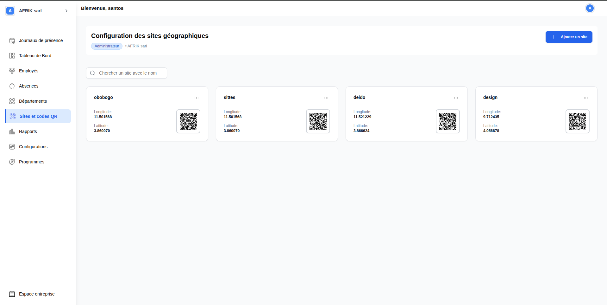
Cliquez sur « + Ajouter un site ». La création se déroule en deux étapes.
- Nom du site : saisissez le nom du site ;
- Adresse du site : renseignez l'adresse physique ;
- Fuseau horaire : sélectionnez le fuseau horaire ;
- Longitude et Latitude : saisissez manuellement ou cliquez sur « Obtenir la localisation ».

- Jours de travail : sélectionnez les jours ouvrés ;
- La même heure tous les jours : cochez pour un horaire uniforme, ou décochez pour personnaliser par jour ;
- Horaire d'ouverture et de fermeture : définissez les heures pour chaque jour sélectionné.

Cliquez sur les trois points en haut à droite de la carte d'un site :
- Éditer le site : modifiez les informations ;
- Supprimer le site : supprimez définitivement ;
- Télécharger QR : téléchargez le code QR pour l'afficher sur le lieu de travail.

Chaque site dispose d'un code QR unique généré automatiquement. Il doit être affiché sur le lieu de travail pour que les employés puissent scanner et enregistrer leurs pointages.
Rapports
L'onglet Rapports offre une vue analytique complète des données de présence. Des filtres permettent d'affiner les données par période, site, département et employé.
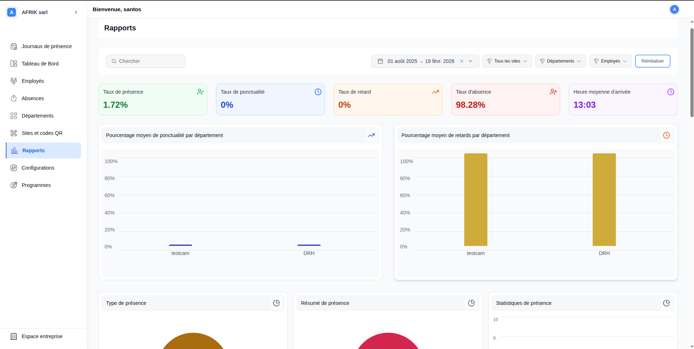
Cinq indicateurs synthétiques en haut de page :
- Taux de présence : pourcentage d'employés ayant effectivement pointé ;
- Taux de ponctualité : pourcentage d'employés arrivés à l'heure ;
- Taux de retard : pourcentage d'employés arrivés en retard ;
- Taux d'absence : pourcentage d'employés absents ;
- Heure moyenne d'arrivée : heure d'arrivée moyenne de l'ensemble des employés.
Deux graphiques en barres par département : pourcentage moyen de ponctualité et pourcentage moyen de retards.
Trois graphiques complémentaires : Type de présence (répartition par mode de saisie), Résumé de présence (présents vs absents) et Statistiques de présence (à l'heure vs en retard).

Un graphique en barres met en avant les cinq employés ayant le meilleur taux de présence sur la période.
Un graphique en courbes présente l'évolution du retard moyen par département, avec une courbe distincte par département.
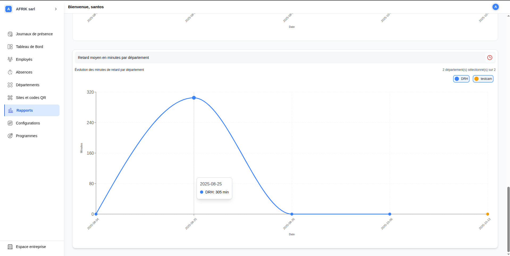
Tous les graphiques sont interactifs : survolez les barres ou les courbes pour afficher les valeurs détaillées. Les filtres impactent l'ensemble des indicateurs simultanément.
Configurations
L'onglet Configurations regroupe tous les paramètres nécessaires au bon fonctionnement du système. Il est organisé en cinq sous-onglets : Shifts, Horaires, Utilisateurs, Postes et Types d'absence.
Permet de configurer les plages horaires de travail. Les shifts sont affichés sous forme de cartes indiquant le nom, le type (régulier ou nuit), l'heure de début et l'heure de fin.

Pour créer un nouveau shift, cliquez sur « Créer un nouveau shift » et renseignez :
- Nom du shift (ex. : Morning shift) ;
- Heure de début et heure de fin ;
- Shift de nuit : activez si la plage est nocturne ;
- Capacité : nombre maximum d'employés affectables.
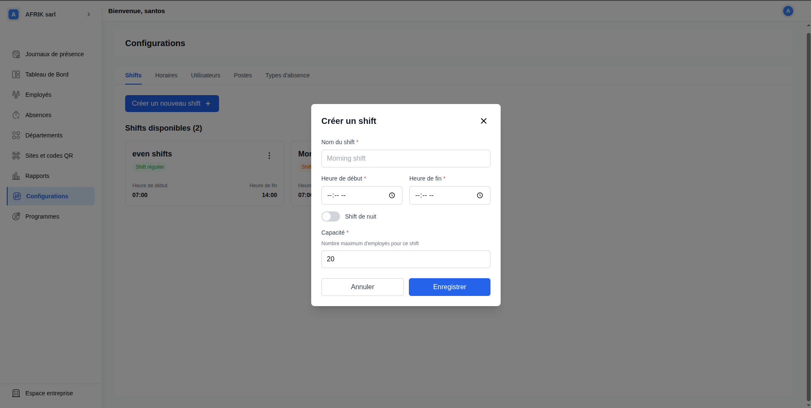
Permet de configurer les horaires de travail par site. Sélectionnez le site, définissez les jours ouvrés et les heures d'ouverture et fermeture — uniformes ou personnalisés par jour.
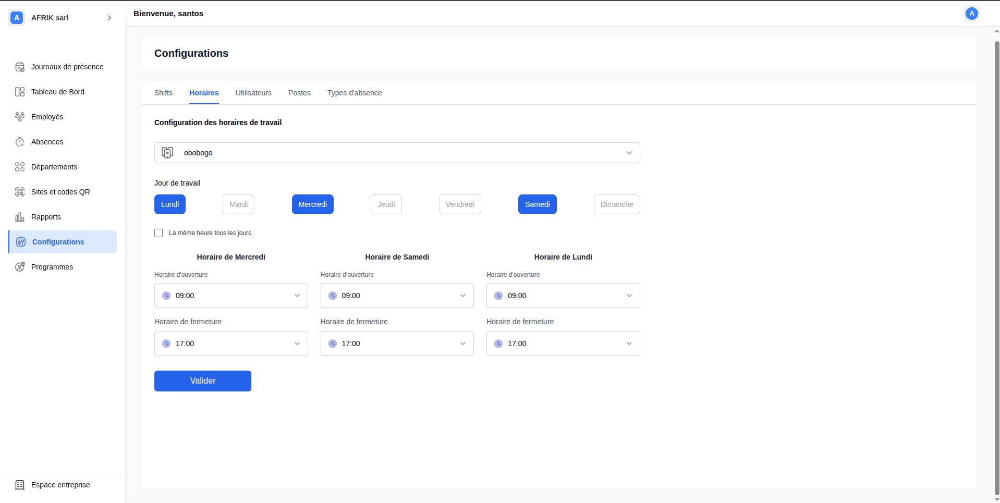
Permet de gérer les comptes des utilisateurs ayant accès au système. La liste affiche le nom, la société, le rôle et l'adresse e-mail de chaque utilisateur.

Cliquez sur « + Ajouter un utilisateur » et renseignez : nom, e-mail, mot de passe et société.
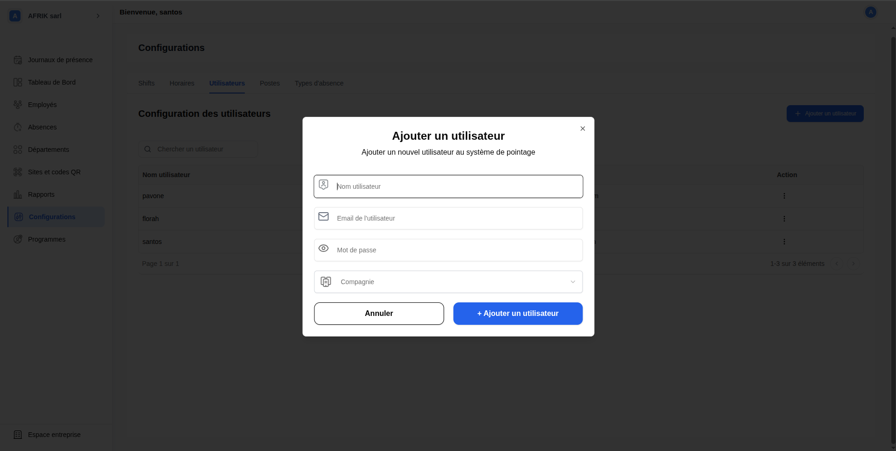
Permet de gérer les intitulés de postes. Cliquez sur « + Ajouter un poste » et renseignez le nom et une description optionnelle.
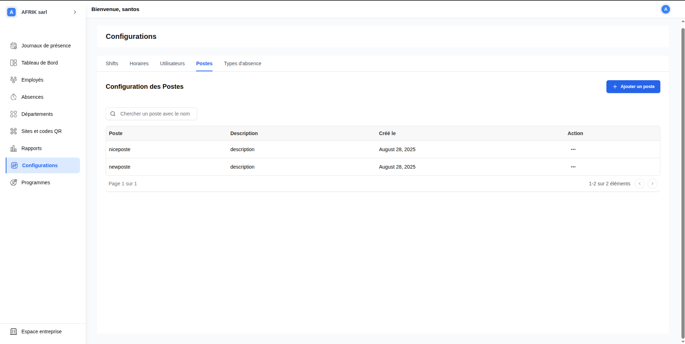

Permet de configurer les catégories d'absence autorisées. Cliquez sur « + Ajouter un type d'absence » et renseignez le nom et une description optionnelle.

Les shifts et horaires déterminent les plages de présence attendues. Les postes et types d'absence enrichissent les profils employés. Les utilisateurs contrôlent les accès à l'application.
Programmes
L'onglet Programmes permet de définir et gérer les plannings de travail. Un programme regroupe des shifts, des jours de travail et des employés affectés. Il constitue le cadre de référence utilisé par le système pour évaluer la présence, les retards et les absences.
La liste affiche pour chaque programme son nom, ses dates d'exceptions, le nombre de shifts associés, le nombre d'employés inscrits, la capacité maximale et les jours de travail prévus.
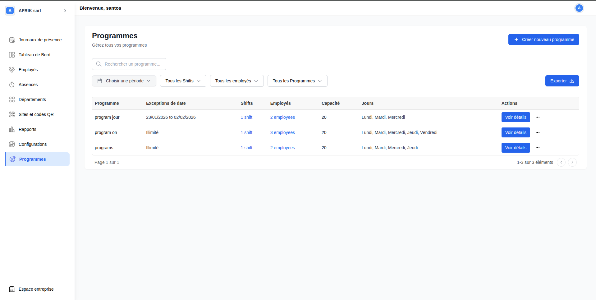
Cliquez sur « + Créer nouveau programme » et renseignez :
- Nom programme : donnez un nom explicite ;
- Sélectionner les jours : cliquez sur les jours souhaités (Lundi à Dimanche) ;
- Capacité du programme : nombre maximal d'employés, tous shifts confondus ;
- Shifts : pour chaque shift, sélectionnez le shift concerné et les employés à affecter. Cliquez sur « + Ajouter un shift » pour créer plusieurs blocs. Un même employé peut appartenir à plusieurs programmes, à condition que ses shifts ne se chevauchent pas ;
- Dates : Illimité, Limite de plage de dates ou Liste de dates explicites ;
- Dates d'exception : jours à exclure de la période de validité (jours fériés, fermetures exceptionnelles…).
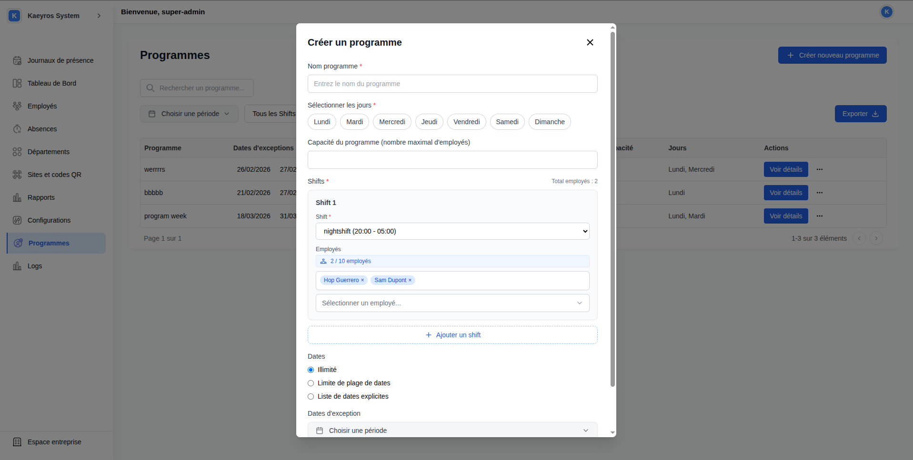
Cliquez sur « Voir détails » pour accéder à la page de détail : jours du programme, capacité avec barre de progression, dates d'exception, shifts disponibles (cartes) et tableau des employés inscrits. Le bouton « Retirer » permet de retirer un employé du programme.

Depuis la liste, cliquez sur les trois points à droite d'un programme pour Modifier ou Supprimer. Depuis la page de détail, le bouton « Modifier le programme » en haut à droite donne accès directement au formulaire.
Un même employé peut être inscrit dans plusieurs programmes simultanément, à condition que les shifts auxquels il est affecté ne se chevauchent pas. Le système s'appuie sur les programmes pour calculer automatiquement les présences attendues, les retards et les absences.